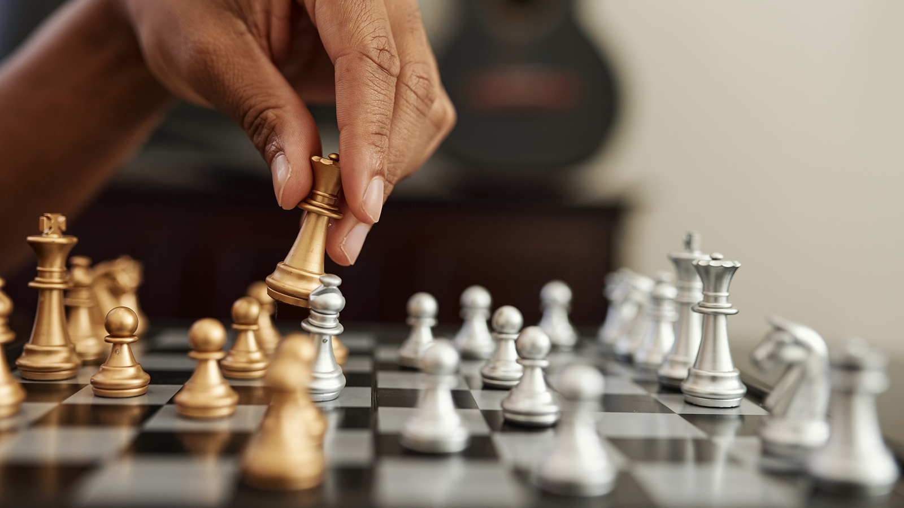

I love how fast and dynamic the game is. It’s amazing how one moment can change everything, and the teamwork involved is incredible. Plus, the passion fans have is contagious there’s nothing quite like the energy of a big match!"

click here to learn about soccer
People like coding because it combines creativity, problem-solving, constant learning, logical thinking, and the satisfaction of building useful projects, while offering independence and rewarding career opportunities.

click here to learn about Coding
I like chess because it’s a game of strategy and deep thinking, where every move requires careful planning and foresight, offering endless challenges that keep the mind engaged while also providing a sense of accomplishment when outsmarting an opponent. Plus, it's a great way to improve problem-solving and critical thinking skills!
click here to learn about chess